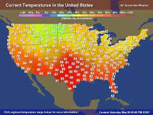

Puerto Rico Information
...
...
...
...
- Puerto rican culture is a blend of Taino, Spanish and African culture.
- Puerto Rico does not require passports to travel to it if you live in the U>S.
- Christopher Columbus returned to the Americas in 1493.
JetBlue, Southwest Airlines, American Airlines, Qatar Airways, Spirit Airlines, United, Air Canada and Delta all fly non-stop to Puerto Rico.
A video to look at about Puerto Rico
Puerto Rico's history
.
.
.
.
.
.
Spanish
The introduction of Spanish in the 15th century by invading Spaniards, the language has become the most dominant in the country. Over 95% of the population in Puerto Rico speaks the language in education, business, and daily life contexts. Spanish is also Puerto Rico's official language. Puerto Rico has developed a different version of the language. Spanish spoken in Puerto Rico borrowed from elements of African dialects, Taino words, and English phrases. The difference with other Spanish dialects is not very pronounced, however, and Puerto Ricans understand other Spanish speakers from other countries.
English
English is another of the official languages, although it falls short on popularity. Less than 10% of Puerto Ricans speak the language. English was introduced after the US seized Puerto Rico from Spain in 1898. The US government instituted both English and Spanish as official languages of the US administration. Institution of English as the language of instruction in schools was challenged in 1930 by ethnic forces. Spanish was subsequently made the language of instruction while English was made the second language. Puerto Ricans are renowned for curating "Spanglish" which is a mixture of Spanish and English. The language is spoken mostly in or near tourism centers.
PuertoRico art
There is a strong artistic presence among Puerto Ricans, whether from artists formally trained in art schools, or self-taught amateurs. Serious students of Puerto Rican art always go to the Institute of Puerto Rican Culture in the Dominican Convent in Old San Juan. It's the best source of information on the island about Puerto Rican arts and crafts. With its dozen or so museums and even more art galleries, Old San Juan is the greatest repository of Puerto Rican arts and crafts. Galleries sell everything from pre-Columbian artifacts to paintings by relatively contemporary artists such as Angel Botello, who died in 1986. The Galería Botello, at 208 del Cristo St., was his former home. He restored the colonial mansion himself; now his paintings and sculptures are on display there. Another good place to see Puerto Rican art is the Museum of the University of Puerto Rico in Río Piedras. Because of space limitations, the museums galleries can exhibit only a fifth of their vast collection at one time, but the work is always of top-notch quality. The collection ranges from pre-Columbian artifacts to works by today's major painters. The greatest art on the island is at the Museo de Arte de Ponce, Las Americas Avenue, in Puerto Rico's largest city. The collection, donated by former governor Luis A. Ferré, ranges from Jan van Eyck's Salvatore Mundi to Rossetti's confrontational Daugthers of King Lear. The museum building was designed by Edward Durell Stone, who also designed New York's Museum of Modern Art. Works are displayed here in a honeycomb of skylit hexagonal rooms. Puerto Rican artists who are represented include José Campeche (1751-1809) and Francisco Oller (1833-1917). In addition to such European masters as Rubens, van Dyck, and Murillo, the museum features works by Latin American artist, including some by the Mexican Diego Rivera.